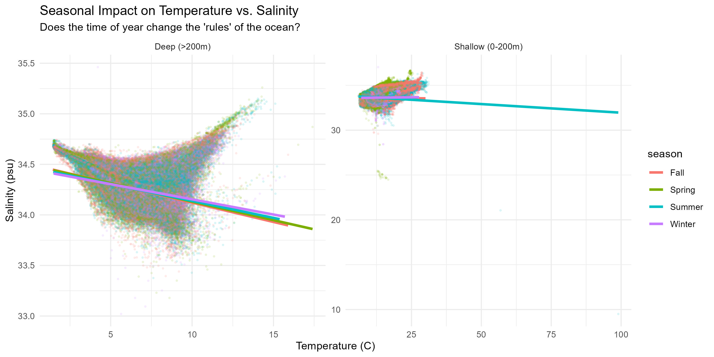
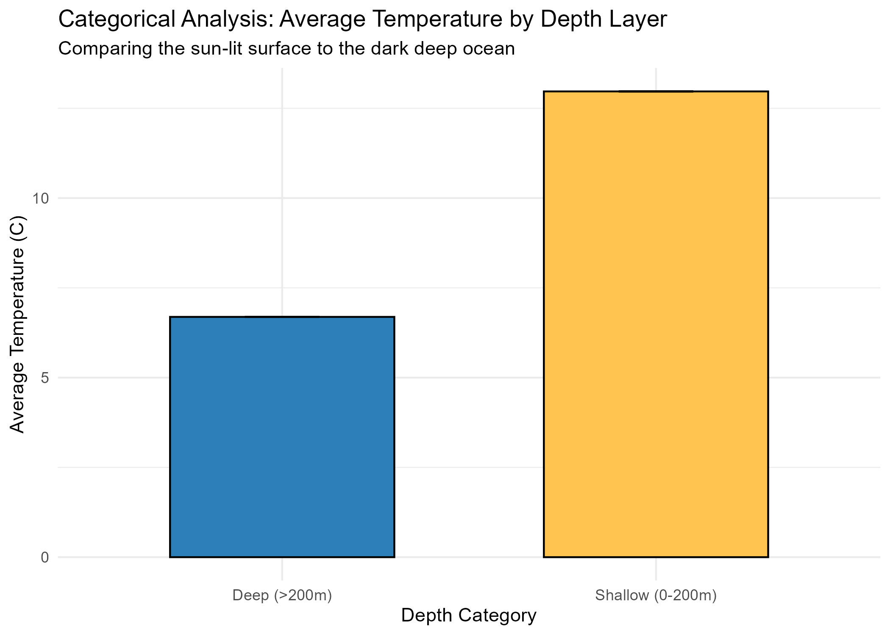
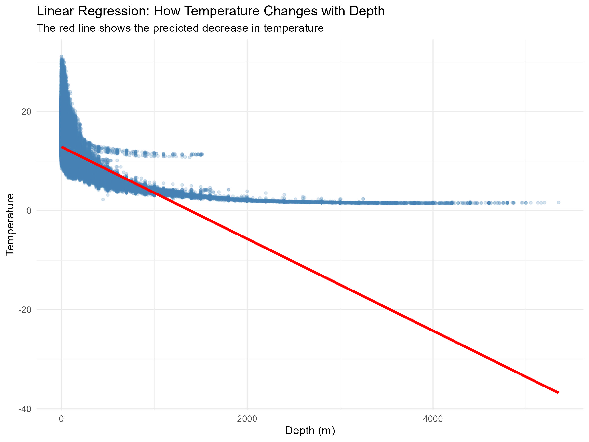
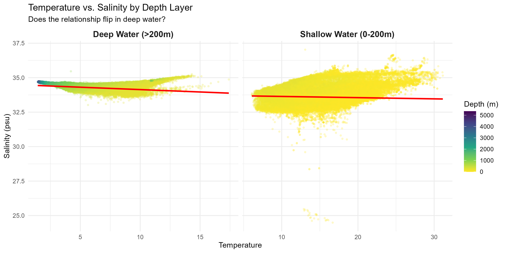
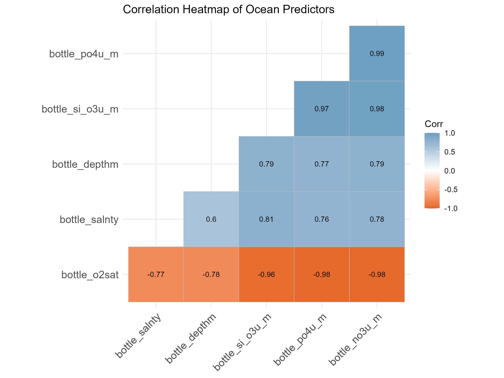
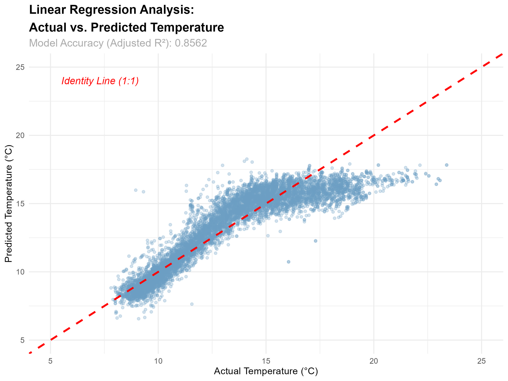

Model Accuracy (R²)
Variation in temperature explained by our final model.
Margin of Error
Average prediction error.
Primary Driver
The dominant structural filter of the ocean.
1. Surface Level: Geographic Spread & Seasons
Geography and time of year dictate the initial thermal behavior and "noise" of the water mass at the surface.
Visualization 1: A Clear Thermal Gradient
Water in the Southern regions begins with significantly higher surface temperatures (20-25°C). This elevated heat creates immense "atmospheric noise" and variability compared to the highly stable, cooler Northern regions (10-15°C).
Interact with the map to explore individual station temperature averages.

Visualization 2: Does the time of year change the rules?
The time of year only changes the rules at the surface. Notice the shallow water data clusters (right); they clearly shift across the seasons (Fall, Spring, Summer, Winter).
However, look at the deep ocean (>200m) on the left. The trend lines perfectly overlap. This mathematically proves the deep ocean is "timeless" and thermally isolated from the sun.
2. The Depth Divide: Two Ocean Worlds
The ocean is not one continuous gradient; it is physically fractured into distinct zones at the 200-meter mark.
Visualization 3: Average Temp by Depth
The shallow ocean layer (0-200m) is an open system, almost twice as warm as the deeper layer.
Our ANOVA analysis (F-value: 715,208, p < 2e-16) proves a massive structural shift at 200m. Once past this line, the ocean becomes a closed system governed by density.

Visualization 4: The Flaw in Simple Linear Models

If we try to predict temperature based only on depth, the model underfits. The ocean's temperature drops violently and then levels out, proving we need a multi-variable approach.
Visualization 5: Salinity Stabilization

In shallow water (right), temperature and salinity form a scattered cloud—decoupled by atmospheric noise. Below 200m (left), depth acts as a quality-control filter, forcing water to be consistently cold and salty.
3. Chemical Correlation & Predictive Modeling
Combining all variables to hunt for the optimal predictive equation.

Visualization 6: The Multicollinearity Trap
Nutrients (Phosphate, Nitrate, Silicate) exhibit near-perfect correlations with each other (0.97 to 0.99) and an inverse relationship with Oxygen (-0.98).
To combat this redundancy, we tested Ridge Regression against Standard Linear Regression. Surprisingly, the Standard model won on unseen test data (MAE: 0.899 vs 0.962)—the physical laws governing these chemicals are simply that stable.
Visualization 7: Actual vs. Predicted Results
Temp = -53.61 - (0.014*depth) + (2.26*salinity) - (5.49*phosphate) - (0.13*nitrate) + (0.13*silicate) - (0.04*o2sat)
This scatterplot visualizes our 85.6% accuracy. For cooler temperatures (5°C to 15°C), the model is exceptionally precise. However, above 15°C, it under-predicts the heat, struggling to capture the chaotic sun-driven spikes of the shallow surface water.

Packages & Technical Methodology
Database queries, encoding fixes, and the software ecosystem utilized.
Software Ecosystem: Packages & Modules
MSQL Modules Utilized:
| Module name | Why do we use it |
|---|---|
| Task | To import files into the data as tables faster. |
| Queries | Join Queries to join the tables. |
R Packages Utilized:
| Package | Why do we use it |
|---|---|
| tidyverse | Reading CSV, cleaning, plotting, tables |
| janitor | Standardize messy column names |
| stringi | Safely convert strange characters to UTF-8 |
| rsample | Train/Test split, including grouped split by cruise |
| yardstick | Metrics (R2, RMSE, MAE) to compare models fairly |
| broom | Tidy model output for reporting |
| ppcor | Partial correlation (controls for depth confounding) |
| car | VIF for multicollinearity |
| glmnet | Ridge/Lasso regression (stable with overlapping predictors) |
| Matrix | Sparse model matrices |
| leaflet | Interactive Geographic data mapping |
Project Files & Appendix
Reproduce these findings by downloading the datasets, scripts, and documentation below.